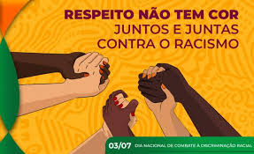
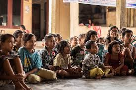
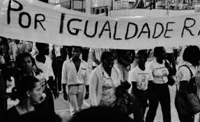
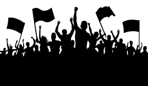

O que é Combate ao Racismo?
Combate ao racismo refere-se às ações e iniciativas destinadas a eliminar a discriminação racial e promover a igualdade racial. Isso inclui uma ampla gama de esforços, desde a educação e conscientização até a criação de políticas públicas e a implementação de leis antirracistas.
Educação e Conscientização
A educação é uma ferramenta poderosa no combate ao racismo. Promover a conscientização sobre a história e os impactos do racismo, bem como ensinar sobre diversidade e inclusão, ajuda a criar uma sociedade mais informada e justa.
Políticas Públicas Antirracistas
As políticas públicas desempenham um papel crucial na promoção da igualdade racial. Isso inclui a implementação de leis que proíbem a discriminação racial, bem como programas de ação afirmativa que visam corrigir as desigualdades históricas.
Movimentos Sociais
Movimentos sociais têm sido fundamentais na luta contra o racismo. Grupos e organizações comunitárias trabalham incansavelmente para defender os direitos das minorias raciais e promover a justiça social.
O Papel das Empresas
As empresas também têm um papel importante no combate ao racismo. Implementar práticas de diversidade e inclusão no local de trabalho, combater a discriminação e promover oportunidades iguais para todos os funcionários são passos essenciais.
Apoio Psicológico
O apoio psicológico é crucial para as vítimas de racismo. Oferecer suporte emocional e terapias adequadas pode ajudar a lidar com os traumas e fortalecer as comunidades afetadas pela discriminação racial.